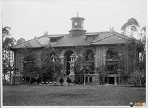
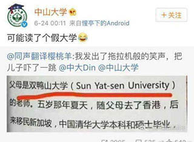
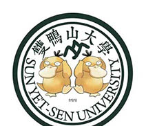

“双鸭山大学”的来源
又到了一年一度的开学季，中大的新生们一定都注意到了一个有趣的名词——“双鸭山大学”。想必许多同学们已经一脸懵逼。
那么，“鸭大”这一神奇的称呼是从何而来呢？我们得追溯到中山大学的起源。
先生手创，遗泽余芳
- 1924年2月邹鲁接管广东农业专门学校、广东法科大学两校之后，即于当月24日召集三校学生在广东高等师范学校礼堂举行大会，会上宣布筹建国立广东大学，并报告了筹备经过和进行计划等。3月3日，广东大学召开首次筹备会议，着重讨论并通过了国立广东大学筹备处组织大纲。为保证筹备工作的开展和国立广东大学的顺利开办，孙中山亲自动手筹措资金。1924年6月9日，孙中山任命邹鲁为国立广东大学首任校长。
- 1924年6月21日广东大学举行校长就职和学生毕业典礼，孙中山委托总参议胡汉民代表大元帅在会上宣读了训词：“学海汪洋，毓仁作圣，大学毕业，此其发轫。植基既固，建业立名，登峰造极，有志竟成。为社会福，为邦家光，勖哉诸君，努力自强。”
- 国立广东大学定于1924年9月15日正式上课。当时，学校并没有举行开学典礼与成立典礼。后又经校务会议复议，将开学典礼及成立典礼日定于1924年11月11日这一日，也就成为国立广东大学的校庆日。
- 1925年，“广东公立医科大学”“广东公立工业专门学校”并入。
- 1925年3月12日，孙中山逝世后，廖仲恺提议将广东大学更名为中山大学，10月获国民政府批准。同年增设医科。其后，广东公立医科大学、国立广东法科学院、广东省立勷勤大学工学院先后并入。
- 1926年3月，郭沫若就任文科学长，郁达夫任英国文学系主任。
- 1926年7月17日正式更名为“国立中山大学”，成为广东最高学府。
注意（敲黑板！！）：英文名为"Sun Yat-sen University"(SYSU)
神翻译
我们已经知道了“双鸭山”起源于中大的英文名“Sun Yat-sen University”。但是，这一词为人所知的直接原因却是一次不折不扣的神翻译：
这一位译者毫无疑问是混淆了什么。双鸭山作为一个地名是真实存在的，实际上它是一座隶属于黑龙江省的小城市，与俄罗斯隔乌苏里江相望。
但是这和中大半毛钱关系都没有好不好！！！
(╯°Д°)╯︵ ┻━┻
但无论如何，这一神翻译已经广为流传并深入人心。有“好事者”已经制作了大量相关表情包，甚至恶搞的校徽：
如今，“双鸭山大学”已经成为中大的流行元素之一，中大学子也经常自嘲为“鸭大学生”。
现在，你明白“双鸭山大学”的来源了吗？